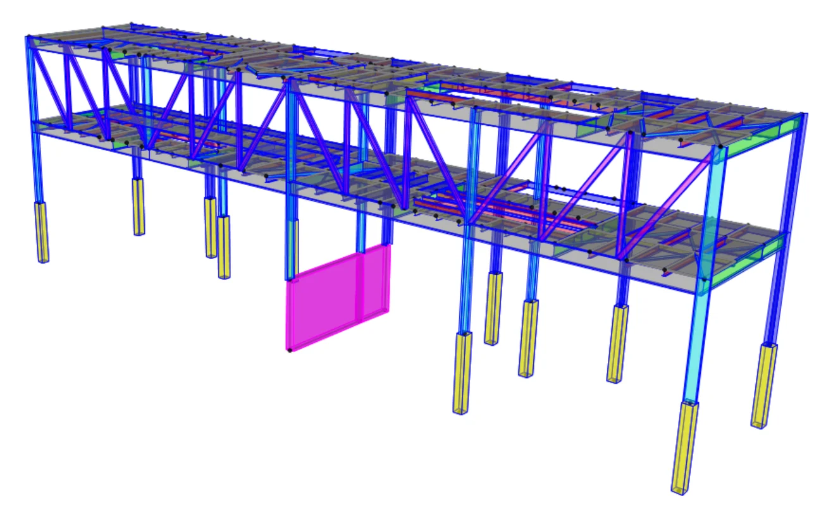
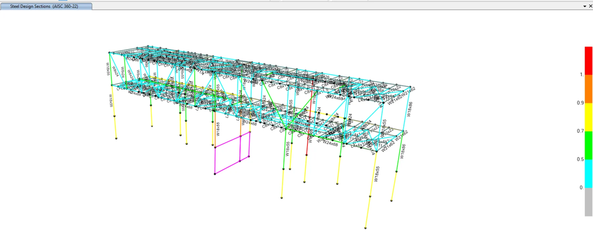
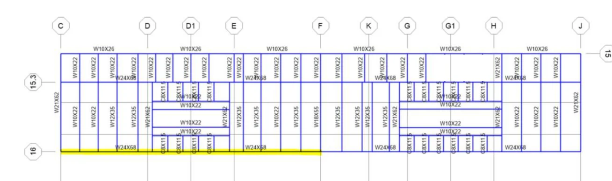
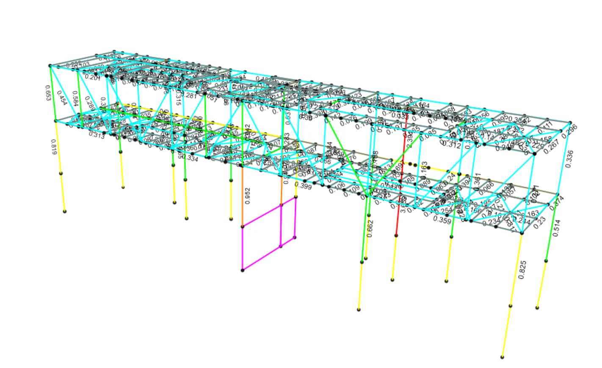
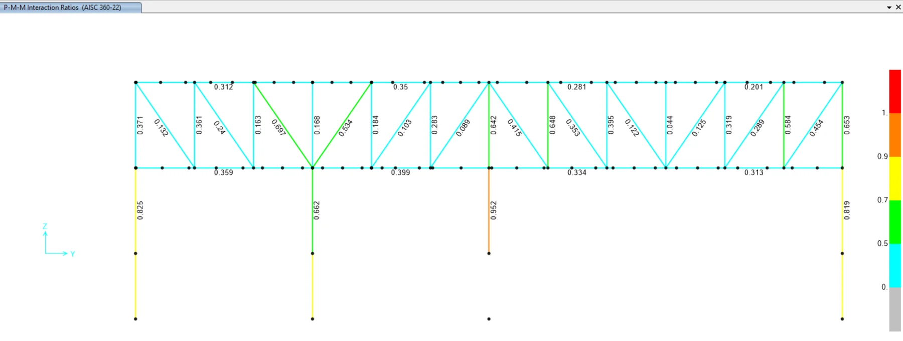
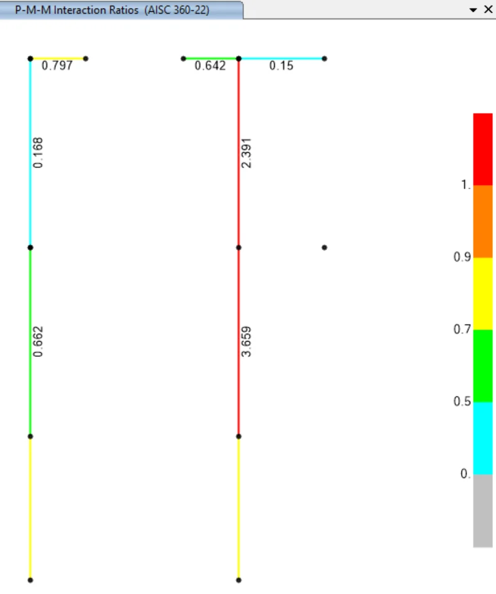
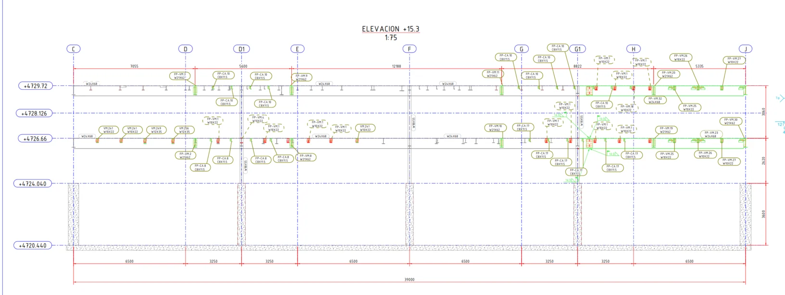
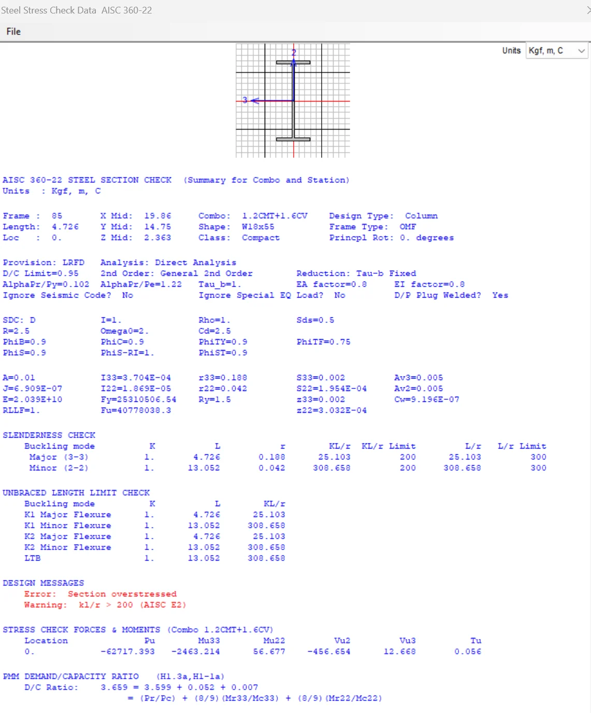
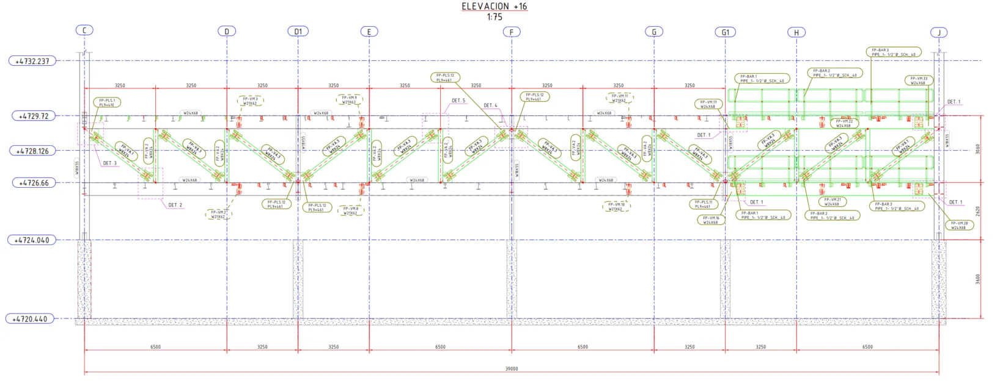
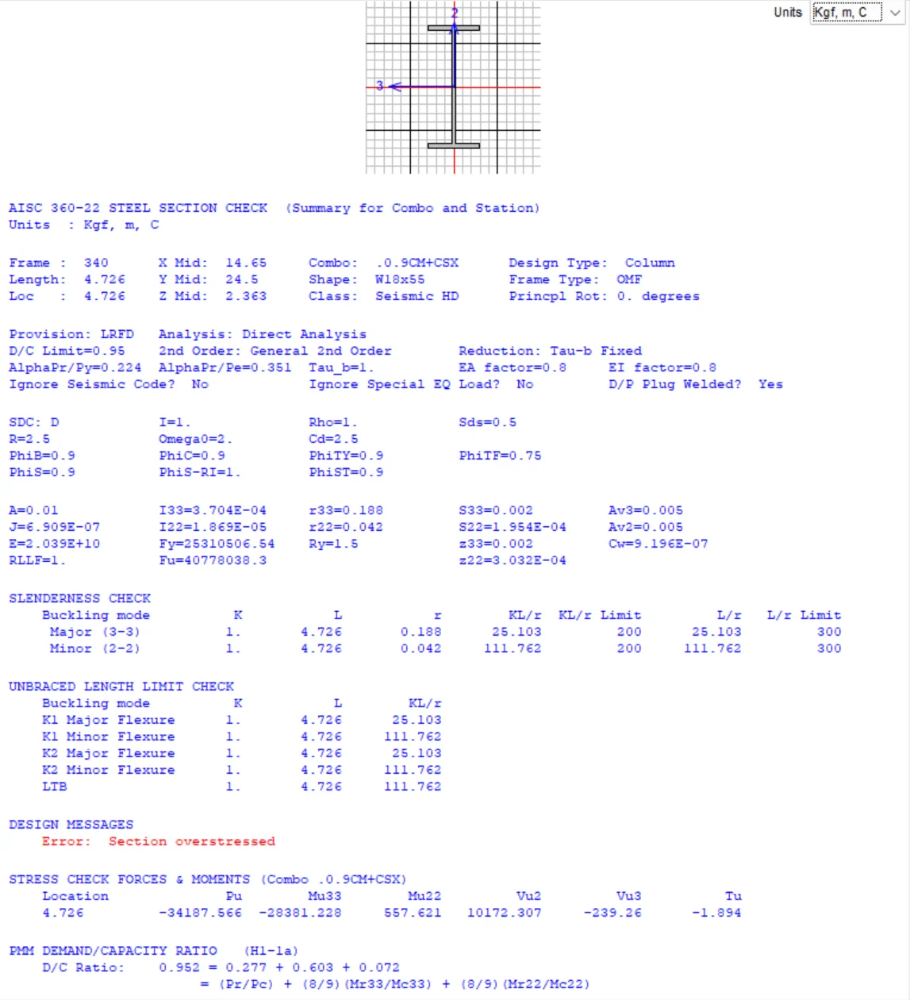

MEMORIA 17 · Acero estructural y plataformas
Plataforma de filtros: análisis de supuestos
Verificación estructural de plataforma de filtrado, evaluando interferencias de montaje, demanda/capacidad de elementos metálicos y necesidad de reforzamiento en columnas principales.
Alcance técnico anonimizado
Qué demuestra esta memoria
- Modelamiento estructural de plataforma de filtrado.
- Determinación de cargas actuantes: muertas, viento e impacto.
- Análisis estructural en SAP2000 y diseño de elementos metálicos.
- Verificación de cimentaciones y compatibilidad geométrica de montaje.
Sistema estructural
Modelo, cargas y configuración evaluada
El sistema está conformado por vigas y columnas metálicas, columnas de concreto de 44.5 cm x 44.5 cm y cimentación de concreto. La evaluación considera la configuración actual de la plataforma para representar de forma más consistente las condiciones reales de operación y soporte de filtros.
vigas metálicascolumnas metálicascolumnas de concretocimentacióncargas actuantesSAP2000
Resultados
Demanda/capacidad y reforzamiento
- Se identifican miembros con niveles de utilización elevados, principalmente en columnas metálicas de soporte.
- Algunas columnas sin reforzamiento superan la capacidad admisible frente a las solicitaciones evaluadas.
- La columna central alcanza aproximadamente el 0.95 de su capacidad, condición límite que justifica reforzamiento si se monta el filtro en esa zona.
- Se requiere reforzar columnas ubicadas en eje G1, elevación 15.3, y eje F, elevación 16, en piso superior e inferior.
Conclusión técnica
Compatibilidad estructural y constructiva
La evaluación no se limita a resistencia: también identifica una interferencia física en la zona de escalera, donde ciertas vigas no pueden montarse por intersección geométrica. Antes del montaje de filtros, la memoria concluye que debe ejecutarse el reforzamiento de columnas metálicas en los ejes G1 y F indicados.
Galería técnica
Modelos, resultados y verificaciones
Imágenes extraídas de la memoria y filtradas para omitir portada, firmas, logos y datos administrativos. Se conservan únicamente figuras técnicas de modelación, resultados de demanda/capacidad y verificaciones de diseño.









